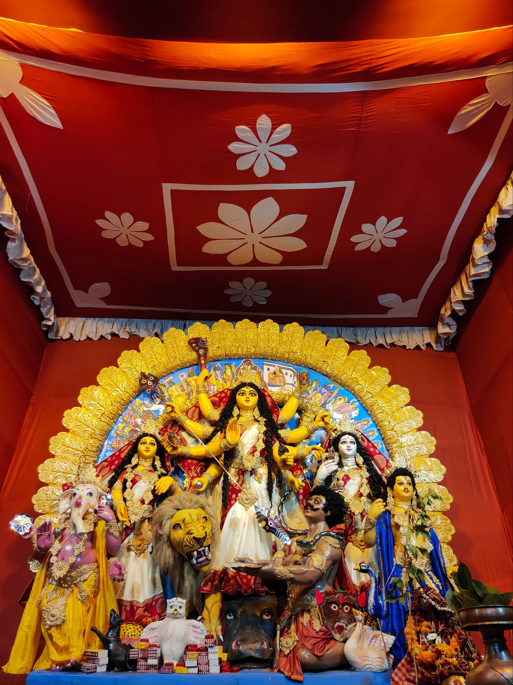

The Host
The rota book was my inheritance.
I did not found this puja and I do not own it. I keep its book — the rota, the budget, the permission file — and a para festival is only ever as good as its book.
How I got the job
The Lake Gardens puja began in 2009 with eleven households and a borrowed idol. My father was its first treasurer; I grew up counting collection money on our dining table, two people counting, never one. In 2019 the secretary's health failed in August, six weeks before the puja, and the committee discovered that everything — the idol booking, the ground, the licences — lived in his head and one school exercise book.
I took the exercise book. That puja ran late and over budget, and I swore the next one would run on paper anyone could pick up. Since then the book has become three: a rota book with 34 named volunteers, a budget book that becomes the board at the gate, and a permission file that opens in April, not in a panic in September. I have hosted eight editions as secretary and run the festivals of two other societies besides — a housing complex in Tollygunge since 2024 and a para in Behala since 2025.
My rules fit on an index card. Meetings run ninety minutes; a meeting that runs past ninety minutes is a rota nobody wrote down. The loudspeaker stops at ten — that is the licence, and it is also how we stay welcome in our own para. Cash is counted by two people or it is not counted. And the accounts go up at the gate on Dashami, before the idol leaves, while everyone who paid can still read them standing up.

The committee, as staffed
| Chairperson | presides, signs, settles arguments | 1 |
|---|---|---|
| Secretary — me | the book: rota, budget, permissions | 1 |
| Treasurer | holds the money; I never do | 1 |
| Puja & ritual | priest, provisions, the five days' rites | 4 |
| Pandal & ground | structure, power, water, the field | 5 |
| Bhog & kitchen | two sittings on Ashtami, one on Nabami | 8 |
| Cultural programme | auditions, running order, the stage | 3 |
| Stalls | the fair row, fees, the fire lane | 2 |
| Cleanup & visarjan | nightly sweep, immersion morning | 6 |
| Rota volunteers | gate, queues, water points, lost children | 34 |
Sixty-five named people. A para puja is not run by a committee of nine and a crowd of helpers — it is run by names in a book, each with a duty and an hour.
The Calendar
A puja year, month by month
The five days in October are the visible part. The festival is actually made between April and September, one unglamorous deadline at a time. Miss the April idol booking and you pay September prices; miss the May permission file and you spend October apologising.
| April | Idol booked at Kumartuli — advance paid, theme decided at the first meeting of the year. |
|---|---|
| May | Permission file opened: police intimation, fire NOC application, ground booked in writing. |
| June | Stall list opens; sponsor letters go out with last year's accounts enclosed — sponsors sign faster when they can read the books. |
| July | Municipality licence; temporary electricity connection applied for; pandal contractor confirmed. |
| August | Rota book filled — 34 names by 31 August. Programme auditions. Bhog provisions priced. |
| September | Pandal rises over three weeks. Sound licence collected. Sponsor board to print on the 1st. Final budget printed. |
| October | The five days. Accounts at the gate on Dashami. Visarjan. Ground handed back within three days. |
| November | Wash-up meeting: accounts signed, balance voted, the book closed — and the first page of next year's opened. |
For Other Societies
What it costs to have your utsav run for you
| Five-day utsav, full run | permission file, rota book, stall plan, programme running order, accounts at the gate | ₹18,000 |
|---|---|---|
| One-day festival | Saraswati Puja, a society Diwali evening, a winter picnic day | ₹6,000 |
| First meeting | one hour, your ground, your last budget on the table | Free |
The fee is for the hosting. The festival budget itself — pandal, idol, food, programme — is raised and held by your society, and the worksheet on the front page will show you its shape before we ever meet.
What I do not do
I do not hold your money. Your treasurer holds it; I hold the book, and the book is open to any member who asks. I do not promise crowds — a first-year festival that plans for the visitors it hopes for goes hungry; we plan for the visitors it can prove. And I do not take a second five-day utsav in the same week as my own para's: one festival, one book, done properly.